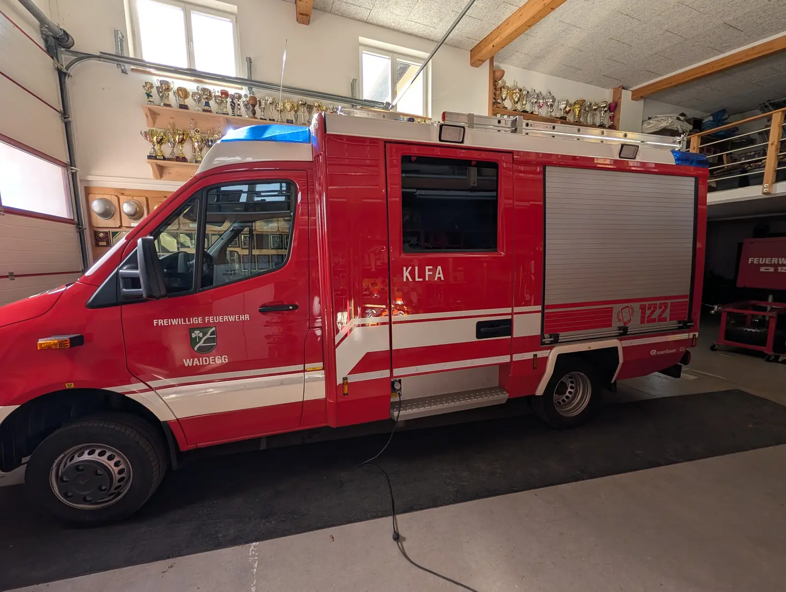
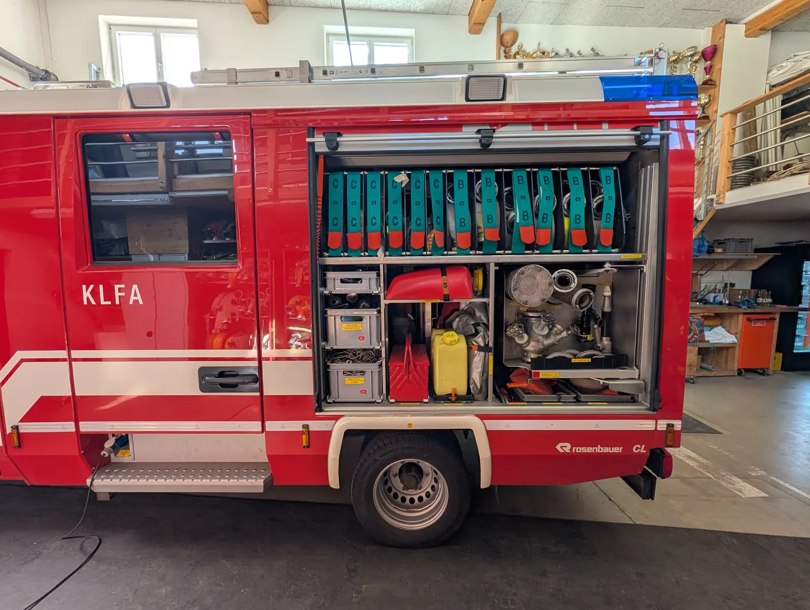
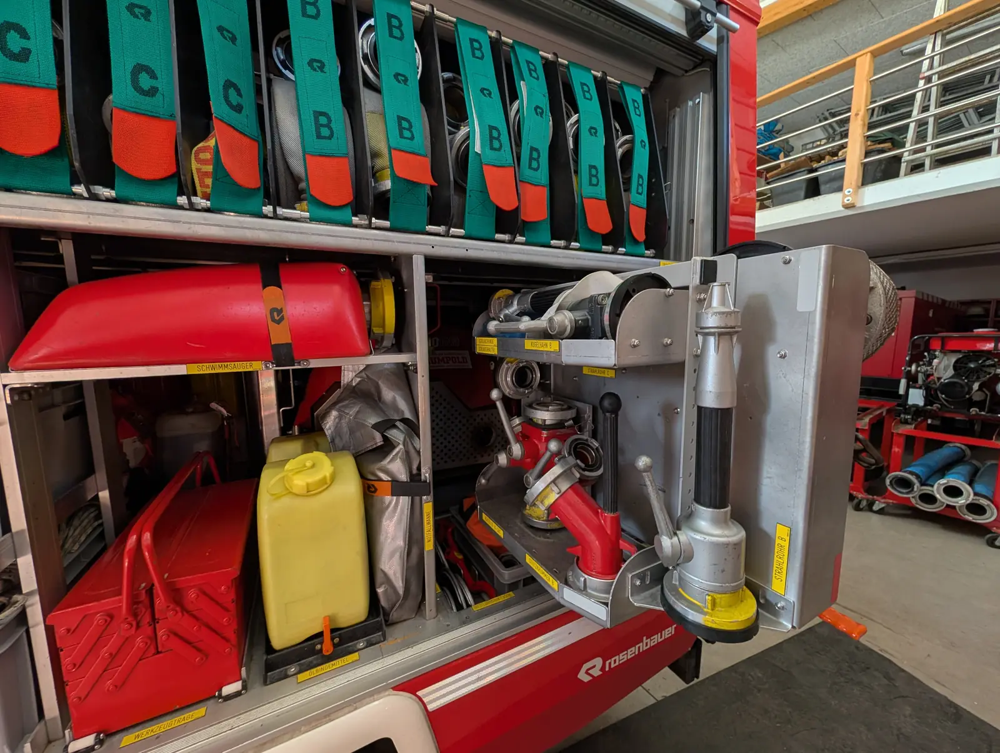
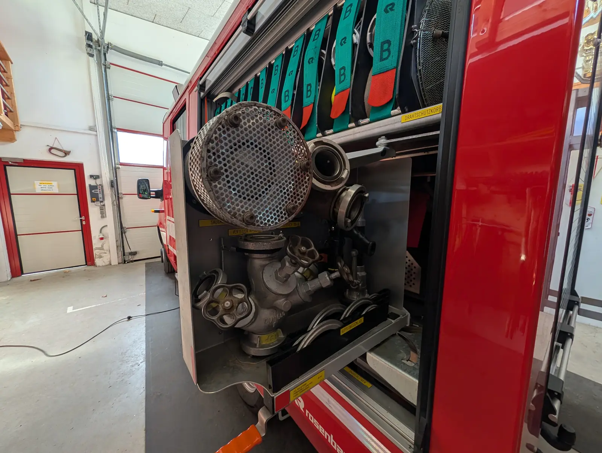
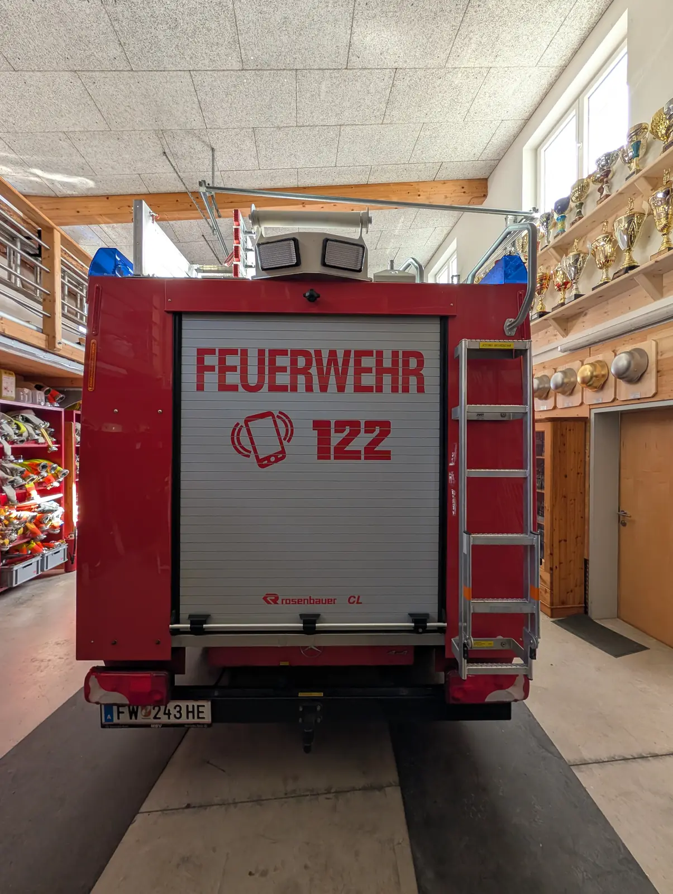

Rundgang durch unser KLFA
Komm mit auf einen Rundgang um unser Kleinlöschfahrzeug! Tippe auf die roten Punkte im Foto, dann erfährst du, was dort ist.
Entwurf – wird noch ergänzt.
1 von 6 Vorne
So sieht unser Kleinlöschfahrzeug von vorne aus. Tippe auf die Punkte!
- Blaulicht – Das blaue Licht auf dem Dach leuchtet bei der Einsatzfahrt. Dann wissen alle: Bitte Platz machen!
- Scheinwerfer am Dach – Vier zusätzliche Lampen oben auf dem Dach.
- Schriftzug WAIDEGG – Hier steht, zu welcher Feuerwehr das Auto gehört: Waidegg.
- Schriftzug FEUERWEHR – Groß und gut lesbar auf der Motorhaube.
- Mercedes-Stern – Das Fahrzeug ist ein Mercedes Sprinter.
- Rosenbauer-Logo – Das rote „R“ steht für Rosenbauer. Diese Firma hat den Feuerwehr-Aufbau gebaut.
- Kennzeichen FW 243 HE – Feuerwehrautos in Österreich haben Kennzeichen mit „FW“. „HE“ steht für den Bezirk Hermagor.
2 von 6 Fahrerseite
Die linke Seite: hier steigt der Fahrer ein.

- Blaulicht – Auch von der Seite gut zu sehen.
- Fahrertür mit Wappen – Auf der Tür steht „Freiwillige Feuerwehr Waidegg“, dazu das Wappen.
- Tür mit Aufschrift KLFA – KLFA heißt Kleinlöschfahrzeug mit Allrad. Allrad bedeutet: alle vier Räder werden angetrieben.
- Trittstufe – Über die Stufe kommt man leichter ins Fahrzeug.
- Rollladen zum Geräteraum – Hinter dem Rollladen ist ein Geräteraum. Im nächsten Bild ist er offen.
- Notruf 122 – 122 ist die Notrufnummer der Feuerwehr.
- Wird noch ergänzt – Diese Stelle wird später beschrieben.
3 von 6 Geräteraum offen
Rollladen auf! Hier ist ganz viel Ausrüstung verstaut.

- Leiter am Dach – Oben auf dem Dach liegt eine Leiter.
- C-Schläuche – Die Gurte mit „C“ gehören zu den C-Schläuchen. Das sind die dünneren Schläuche.
- B-Schläuche – Die Gurte mit „B“ gehören zu den B-Schläuchen. Die sind dicker als C-Schläuche.
- Arbeitsleine / Mehrzweckleine – So steht es auf der Box.
- Rundschlinge / Schäkel – So steht es auf der Box.
- Schwimmsauger – Der rote Schwimmsauger. Sein Platz ist so beschriftet.
- Werkzeugtrage – Der rote Werkzeugkasten. Sein Fach ist mit „Werkzeugtrage“ beschriftet.
- Gelber Kanister – Das Fach darunter ist mit „Ölbindemittel“ beschriftet.
- Notfallwanne – Die graue Tasche daneben. Ihr Platz ist mit „Notfallwanne“ beschriftet.
- Saugkorb – Das runde Gitter kommt vorne auf den Saugschlauch. So kommen keine Steine oder Blätter in die Pumpe.
- Verteiler – Damit teilt man das Wasser auf mehrere Schläuche auf.
- Wird noch ergänzt – Was in der oberen Box liegt, wird später beschrieben.
- Wird noch ergänzt – Das untere Fach wird später beschrieben.
4 von 6 Geräteraum im Detail
Ganz nah dran: viele Plätze haben ein gelbes Namensschild.

- C-Schläuche – Gurte mit „C“.
- B-Schläuche – Gurte mit „B“.
- Schwimmsauger – Beschriftet mit „Schwimmsauger“.
- Werkzeugtrage – Beschriftet mit „Werkzeugtrage“.
- Gelber Kanister – Das Fach ist mit „Ölbindemittel“ beschriftet.
- Notfallwanne – Beschriftet mit „Notfallwanne“.
- Kugelhahn B – So steht es auf dem Schild darunter.
- Stützkrümmer B – Das rote, gebogene Teil. Das Schild darunter sagt „Stützkrümmer B“.
- Strahlrohr B – Aus dem Strahlrohr kommt vorne das Wasser heraus. Das Schild daneben sagt „Strahlrohr B“.
- Wird noch ergänzt – Diese Stelle wird später beschrieben.
5 von 6 Armaturen-Auszug
Dieses Fach kann man herausziehen. Hier sind die Armaturen.

- Saugkorb – Das runde Gitter mit den vielen Löchern. Es hält Steine und Blätter von der Pumpe fern.
- Verteiler – Mit den Handrädern öffnet und schließt man die einzelnen Abgänge. So kann das Wasser in mehrere Schläuche fließen.
- Kupplungsschlüssel – Damit werden die Schlauchkupplungen fest zusammengedreht. So steht es auf dem Schild.
- Drahtschutzkorb – Der Platz ist mit „Drahtschutzkorb“ beschriftet.
- B-Schläuche – Gurte mit „B“.
- Fach: Saugerleinen – So steht es auf dem Schild.
- Wird noch ergänzt – Diese Teile werden später beschrieben.
6 von 6 Heck
Das Heck: hinten ist auch ein Rollladen und eine Leiter.

- Blaulicht – Auch hinten gibt es Blaulicht.
- Notruf 122 – Das Handy-Zeichen und 122: So erreichst du im Notfall die Feuerwehr.
- Rollladen hinten – Dahinter ist ein weiterer Geräteraum. Ein Foto davon fehlt noch.
- Rosenbauer-Logo – Der Aufbau ist von Rosenbauer.
- Leiter – Über die Leiter kommt man aufs Dach.
- Kennzeichen – Wie vorne: FW 243 HE.
- Anhängerkupplung – Hier kann ein Anhänger angehängt werden.
- Wird noch ergänzt – Diese Stelle wird später beschrieben.